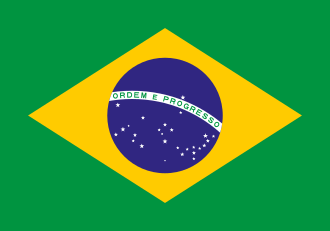

Símbolos Nacionais
República Federativa do Brasil
|  |  |
Hino nacional Brasileiro
Símbolos Nacionais do Brasil
"Os símbolos nacionais representam o nosso país e têm função de formatar a identidade dele. Esses símbolos são uma forma de representar os valores que formaram nossa sociedade e garantem o senso de patriotismo na população. Eles simbolizam a soberania da nação brasileira e reproduzem parte de nossa história e cultura. Os símbolos nacionais são usados em ocasiões formais, como eventos diplomáticos. A legislação brasileira definiu, por meio da lei nº 5700, de 1º de setembro de 1971, que nosso país possui quatro desses símbolos, que são: Bandeira Nacional Hino Nacional Armas Nacionais Selo Nacional Essa definição foi ratificada na Constituição de 1988. Atualmente existe uma data comemorativa para celebrar os símbolos nacionais. O Dia dos Símbolos Nacionais é celebrado anualmente no dia 18 de setembro. Vejamos alguns detalhes de cada um dos quatro símbolos que representam o Brasil." Veja mais sobre "Símbolos nacionais" em: https://brasilescola.uol.com.br/curiosidades/simbolos-nacionais.htm